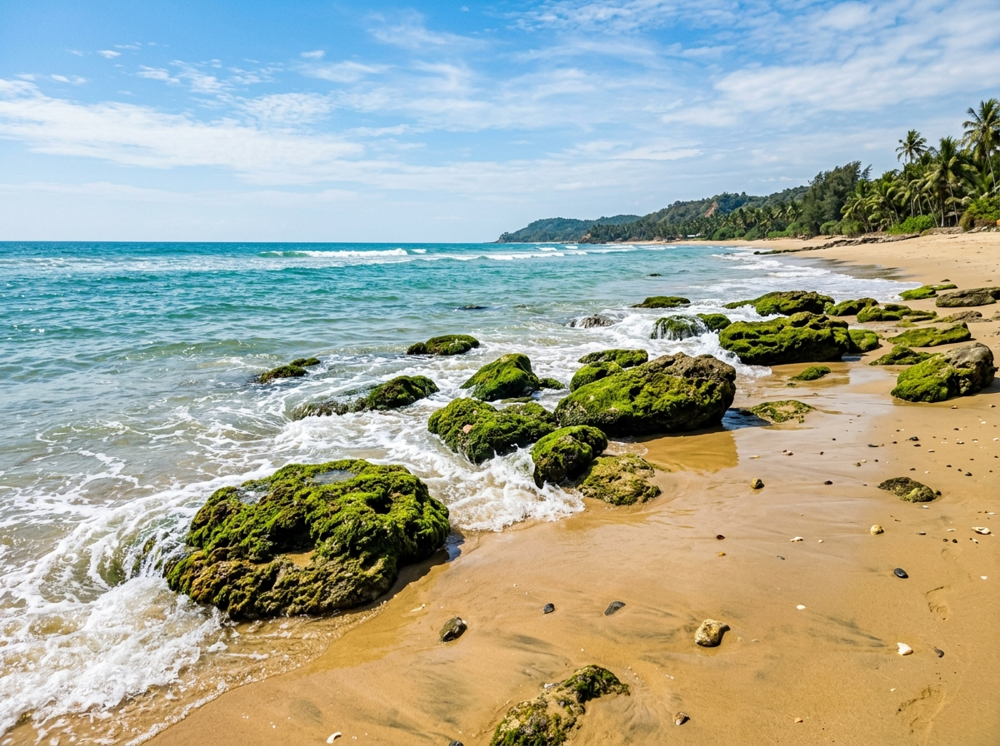
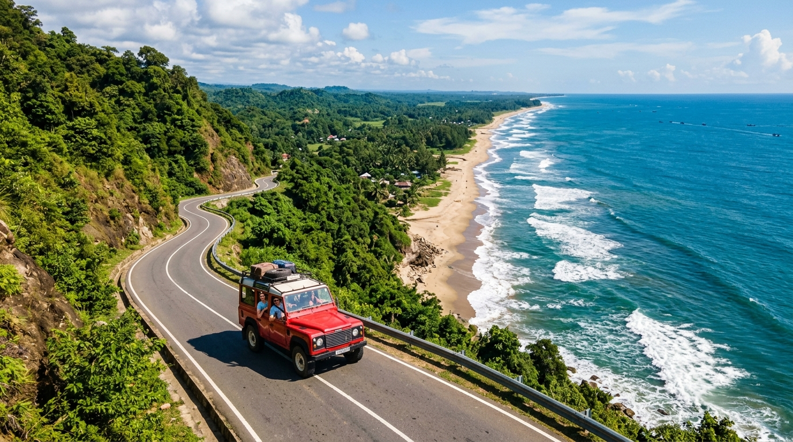
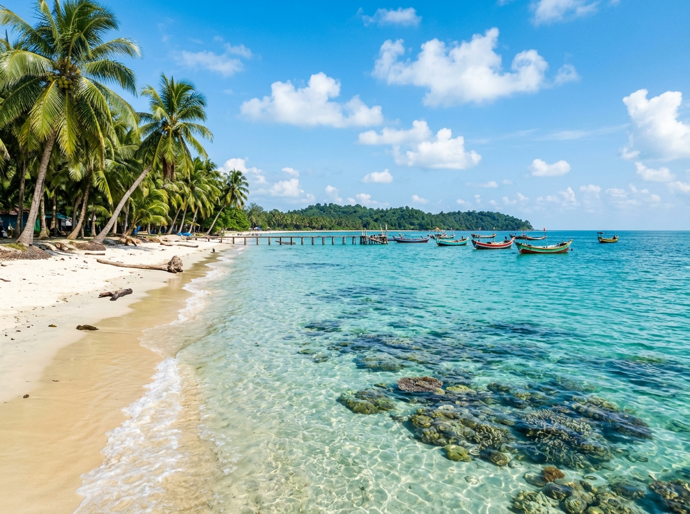
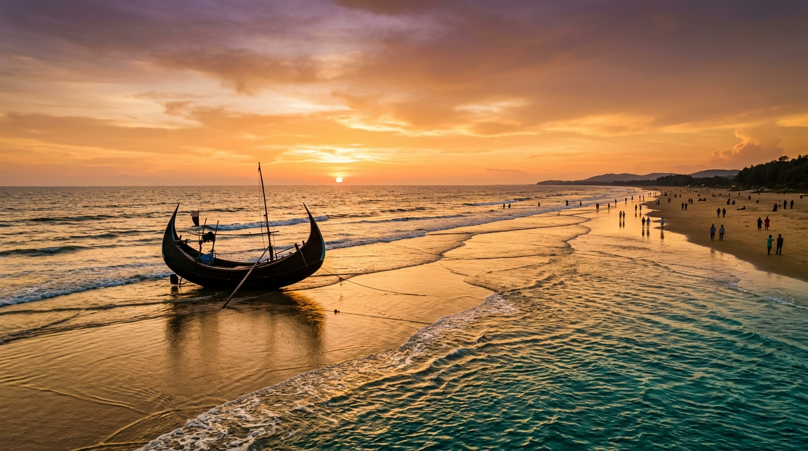
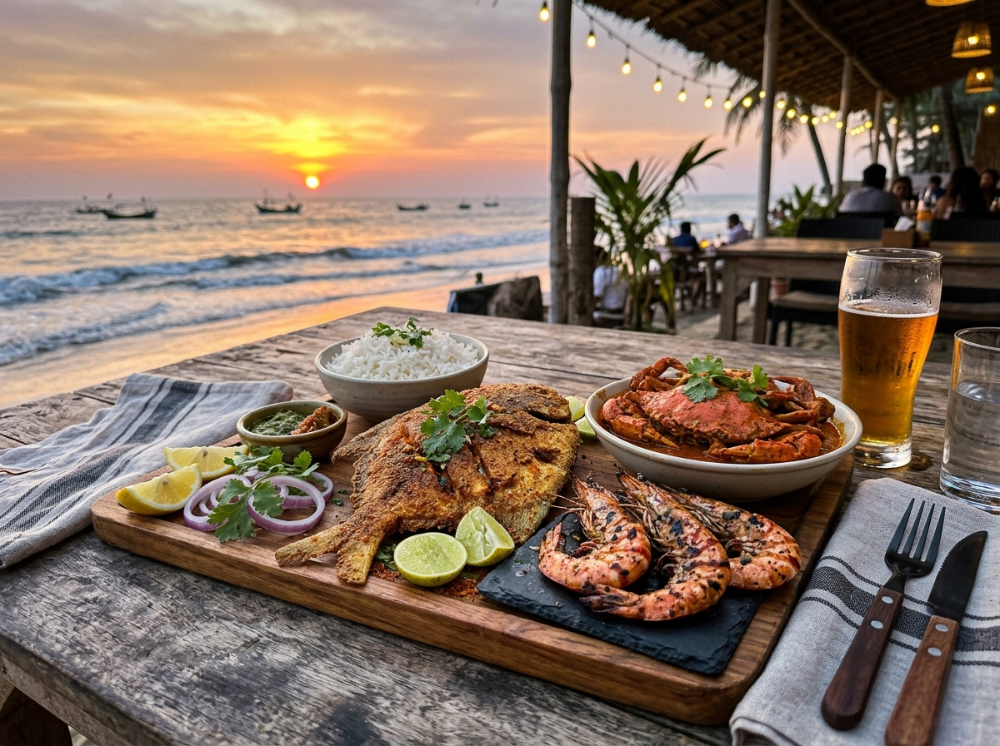
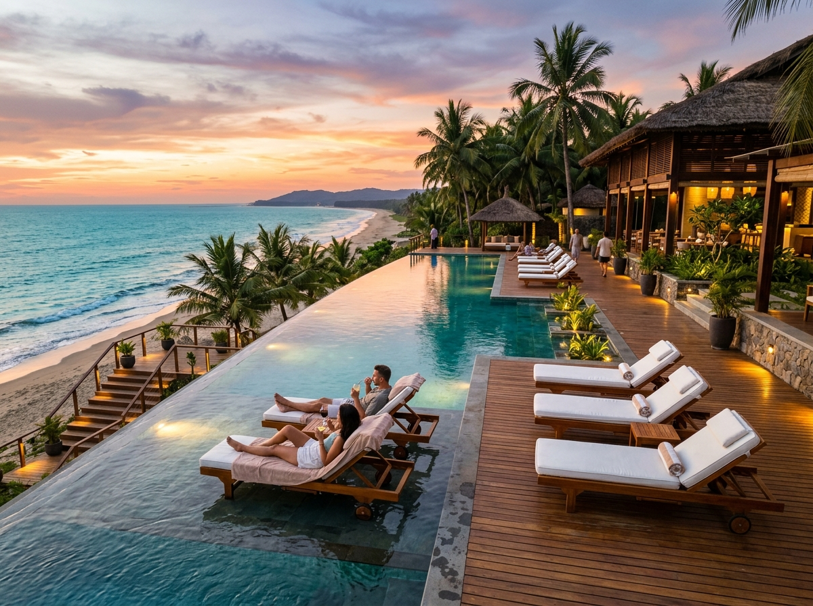
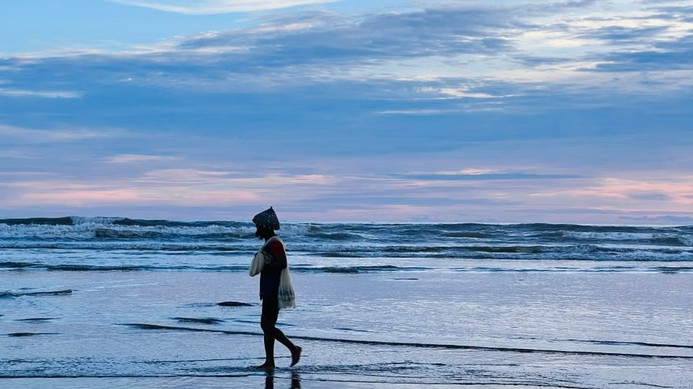
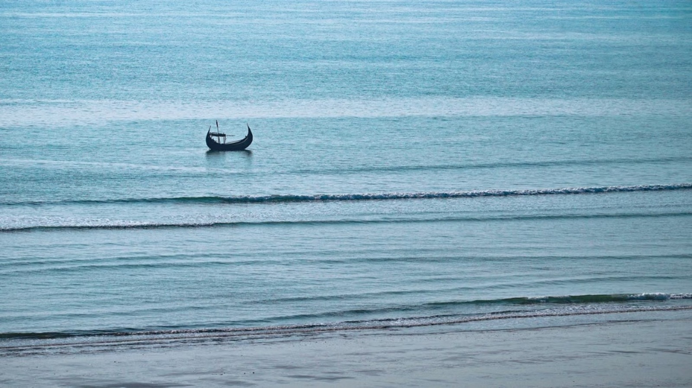
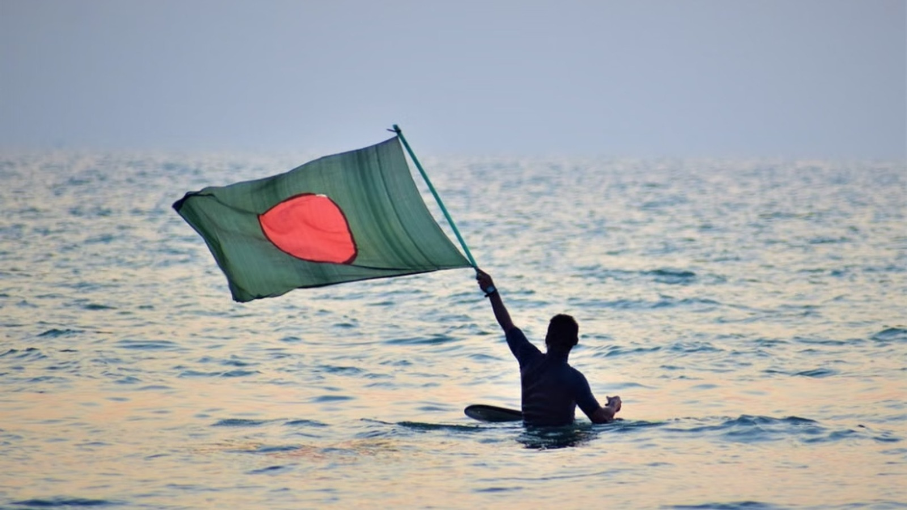
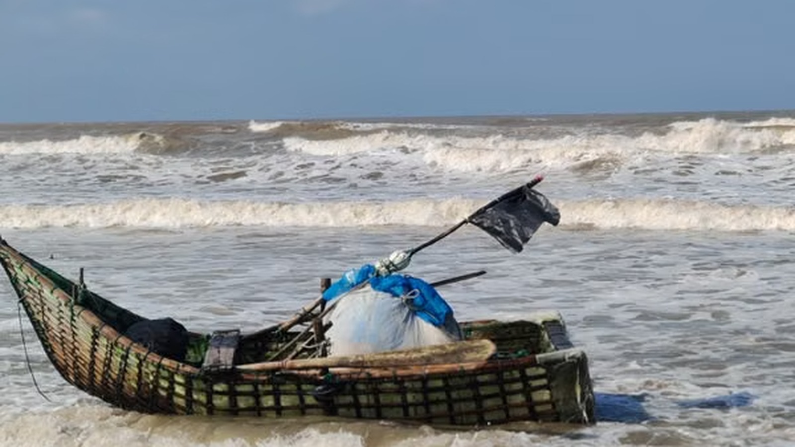

Coral Wonder 32 km from townInani Beach
Famous for natural green-mossy coral stone boulders, shallow crystal-clear turquoise waters, and tranquil sea breeze with fewer crowds.
Experience the world's longest unbroken natural sea beach (120 km), scenic Marine Drive along lush tropical hills, emerald coral waters, and mouth-watering seafood.
Long before it became the tourism capital of Bangladesh, Cox's Bazar was known by names like Panowa (meaning "yellow flower") and Palongkee. Its recorded history traces back to the Mughal era when Prince Shah Shuja, struck by the region's breathtaking beauty on his way to Arakan, commanded his retinue of a thousand palanquins to camp here—giving rise to the nearby area still known as Dulahazara. For centuries, this pristine 120-kilometer shoreline of the Bay of Bengal remained a treasured gem of Arakan kings and Mughal rulers.
The town's modern name honors Captain Hiram Cox, an officer of the British East India Company. In the late 18th century, Captain Cox was appointed Superintendent of the Palongkee outpost to oversee the compassionate rehabilitation of Arakanese (Rakhine) refugees. He established a bustling local market (a "bazar"), and following his death in 1799, the market was officially named "Cox's Bazar" to commemorate his legacy. Today, this rich history survives alongside the majestic golden sands, drawing millions to experience its undeniable charm.
From vibrant bustling sunset shores to secluded coral rock beaches and tropical coral islands.

Coral Wonder 32 km from townFamous for natural green-mossy coral stone boulders, shallow crystal-clear turquoise waters, and tranquil sea breeze with fewer crowds.

World Class Drive 80 km Scenic RouteThe world's longest marine drive highway. Flanked by lush green towering hills on one side and the roaring Bay of Bengal on the other.

Coral Paradise Cruise from TeknafBangladesh's only coral island (Narikel Jinjira), surrounded by swaying coconut palms, live coral gardens, scuba diving, and fresh green coconuts.

City Center Central Cox's BazarThe heartbeat of Cox's Bazar sea beach. Buzzing with vibrant evening beach lighting, horse rides, beach umbrella loungers, and lively street seafood stalls.
Climb the scenic hilltop stairs for a bird's-eye panoramic view of the infinite Bay of Bengal. Home to natural waterfalls and tropical forest trails.
Visit the ancient hilltop Adinath Temple, Buddhist pagodas, mangrove forests, and red crab nesting sanctuaries on pristine Sonadia island.
Find your way around the 120km coastline, discover beaches, and plan your route.
Get your pulse racing with water sports, aerial parasailing, and off-road open jeep rides on the coastline.
Cruise the 80km Marine Drive with the ocean wind in your hair on an iconic retro open-top 4x4 Chander Gari.
Learn from Bangladesh's champion surf clubs at Kolatoli. Consistent 3 to 6 ft waves perfect for beginner & intermediate surfers.
Drive heavy-duty four-wheel ATV quad bikes right across the wide sand stretches during low tide.
Zip across sea crests with twin-engine speedboats slicing through the Bay of Bengal surf.
Experience the vibrant traditions of the indigenous Rakhine community, local crafts, and year-round festivities.
Celebrate the traditional water festival with the local Rakhine community in mid-April. A time of joy, traditional dances, and water throwing to wash away the past year's sorrows.
Visit local weaving villages where artisans create intricate, colorful textiles and shawls using traditional wooden looms.
A bustling market offering handmade shell crafts, pearls, sandalwood, traditional Burmese clothes, and famous tamarind candies.
Feast on freshly caught ocean delicacies, world-renowned Chittagonian spices, and signature local seafood.

Marinated with mustard, turmeric, and local coastal chili paste, shallow-fried to golden perfection.
Charcoal-grilled ocean prawns basted with garlic butter, lemon, and crushed coriander seeds.
Rich and aromatic Chittagonian spicy crab curry slow-cooked with fresh onions, coconut milk, and ginger.
Explore the famous *Shutki Mahal* for sun-dried sea fish and Burmese Market for handmade pearls, tamarind candy, and Rakhine handloom shawls.
Handcrafted plans to help travelers experience the very best of Cox's Bazar's unbroken shores, scenic roads, and cultural sights.
Arrive via the iconic Oyster Railway Station. Stroll the bustling Kolatoli & Laboni beaches, soak in the golden hour sunset over moon-shaped Sampan boats, and enjoy fresh fried Rupchanda fish for dinner at night beach stalls.
Climb the hilltop stairs of Himchari for a dramatic panoramic sea view and waterfall. Head south to Inani Beach to walk among ancient green-mossy coral boulders at low tide, returning for evening souvenir shopping at the Burmese Market.
Morning sea bath along Kolatoli beach with beginner surfing lessons from local surf masters. Afternoon relaxation under beach umbrellas and a twilight walk watching local fishermen pull their nets.
Rent an open 4x4 Jeep and cruise the 80km Marine Drive between dramatic mountains and crashing waves. Experience thrilling tandem parasailing high above the ocean, with a sunset coffee stop at an oceanfront cafe.
Catch a morning speedboat across the channel to Maheshkhali Island. Visit the ancient Adinath Temple on Mainak Hill, Buddhist pagodas, and stop by the famous Shutki Mahal dried fish bazaar before heading home.
Explore the best of Cox's Bazar main beaches, Himchari waterfalls, and Inani's coral boulders. Enjoy beach quad biking and high-speed boat wave blasting.
Board the luxury sea cruise to Bangladesh's only coral island (Narikel Jinjira). Cycle along sandy trails lined with coconut palms, snorkel among live coral reefs, and take a local boat out to uninhabited Chera Dwip.
Return to Cox's Bazar to explore Rakhine Buddhist monasteries, authentic handloom weaving factories, Burmese pearl markets, and a breathtaking farewell twilight beach stroll.
Experience world-class architectural designs, ocean-facing balconies, and warm Bangladeshi coastal hospitality.

Read experiences from travelers who explored the world's longest sea beach.
"The Marine Drive was absolute magic! The juxtaposition of green hills on one side and the vast ocean on the other is breathtaking. A must-visit!"
"Loved the fresh seafood at the beachside stalls in Sugandha. The fried Rupchanda fish with local spices was incredible. Sunset views were spectacular."
"Inani Beach was so peaceful compared to the main town. The coral stones covered in green moss during low tide made for amazing photography."
Help us preserve the natural beauty and biodiversity of Cox's Bazar for future generations.
Keep the 120km beach pristine. Always dispose of plastics and wrappers in designated bins, or take your trash back with you.
When visiting Saint Martin's Island or Inani, do not step on, break, or collect coral stones. They are living ecosystems.
Maintain distance from red crabs on Sonadia Island and do not disturb sea turtle nesting sites along the southern coast.
Smooth connectivity and 24/7 tourist safety information for your peaceful trip.
Multiple convenient travel options from Dhaka, Chittagong, and Sylhet:
Travel by direct fast express train (Cox's Bazar Express / Parjotok Express) from Dhaka in just 8 hours.
Most Scenic & Comfortable55-minute direct flights from Hazrat Shahjalal International Airport (DAC) via Biman, US-Bangla, and Air Astra.
Fastest OptionOvernight AC buses (Green Line, Hanif, Saintmartin Hyundai) with reclining seats and USB chargers.
Budget FriendlyCox's Bazar is fully patrolled by specialized Tourist Police and Sea Lifeguards:
Click any photo to view in high resolution.



